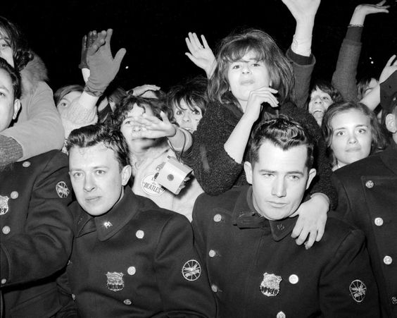

"I remember that I was in 5th grade and my best friend's mother wouldn't let her watch them on Ed Sullivan. I urged her to run away from home because her parents were sooooo uncool!"
ED SULLIVAN SHOW
NEW YORK CITY
1964
CALMING
'I FEEL FINE'